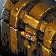

دو آیتم افسانهای از رید Venomous Abyss به عنوان جایزه در Talebound
با تکمیف دو دستاورد جدید در Talebound، بازیکنندگان میتوانند دو آیتم افسانهای از رید Mythic Venomous Abyss را دریافت کنند.

بازیکنندگان با تکمیف دو دستاورد جدید در Talebound، دو آیتم از لوت رید Mythic Venomous Abyss را به عنوان جایزه دریافت خواهند کرد.
اطلاعات بیشتر
اینها پاداشهای استخراج شده از دادهها در بیلد PTR نسخه ۱۲.۱.۷ هستند. ما در حال گزارش پاداشهای فعلی دستاوردها بر اساس استخراج دادهها هستیم و معتقدیم این موضوع شایستهٔ برجسته شدن است. این تغییرات به عنوان پاداشها تأیید نشدهاند و ممکن است قبل از عرضه تغییر کنند.
Talebound یک حالت بازی جدید و مستقل است که در نسخه ۱۲.۱.۷ عرضه میشود. بازیکنندگان در یک ماجراجویی جدید rogue-lite به عنوان یکی از سه کلاس: The Slayer، The Inquisitor یا The Witch شرکت خواهند کرد. شرکت در Talebound به بازیکنندگان پاداشهای زیادی میدهد و در آخرین بیلد PTR نسخه ۱۲.۱.۷، ما دستاوردها و پاداشهای جدید را استخراج کردهایم!
دو مورد از این دستاوردها Confronting a Mythic Tale و Mythic: The Comprehensive Final Confrontation هستند که به نظر میرسد پاداشهای پایان بازی محسوب میشوند. هر دو دستاورد نیاز دارند که بازیکنندگان آنها را در سطح دشواری Mythic تکمیل کنند و از آنجایی که این یک بازی Roguelite است، بازیکنندگان احتمالاً آپگرید بسیاری از سیستمهای مختلف خواهند داشت تا توانایی کافی برای مقابله با آن را داشته باشند. این دو دستاورد پاداش بسیار منحصر به فردی دارند: 
این به این معنی است که بازیکنندگان میتوانند لوت رید Mythic Venomous Abyss را بدون ورود به رید Mythic دریافت کنند. ما از زمان Warlords of Draenor و میز مأموریت، چنین کشهایی را ندیدهایم، جایی که بازیکنندگان میتوانستند یک کش Mythic از مأموریتهای همراه خود دریافت کنند پس از شکست دادن ۱۵ باس کلیک Heroic.
هنوز مشخص نیست که این آیتمها میتوانند آیتمهای Mythic ۹/۶ از ریدهای Mythic Coiled Altar و Ula'tek را بدهند، اما اگر بتوانند، بسیاری از بازیکنندگان امیدوارند که در باز کردن این کش خوششان بیاید. تست Talebound فردا آغاز میشود و باید ببینیم که تکمیف سطح دشواری Mythic برای دریافت این پاداشها چقدر دشوار خواهد بود.